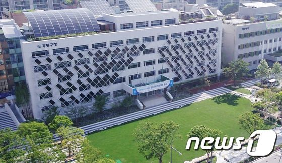

이름
강동구청
소재지
서울특별시 강동구 성내로 25
설명
서울특별시 강동구의 행정을 총괄하는 기관이자 그 기관의 건물.
강동구의회는 의장실만 구청에 있고, 나머지 시설은 건너편에 위치한다.
구청 옆엔 서울 지하철 8호선 강동구청역이 있다.
현 구청장은 더불어민주당 소속의 이정훈 구청장이다.
대중교통
버스 : 3220, 3319, 3321
지하철 : 8호선 강동구청역